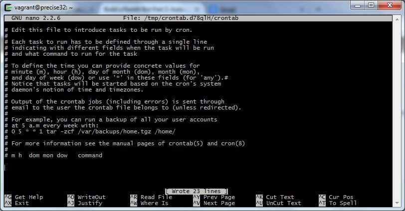
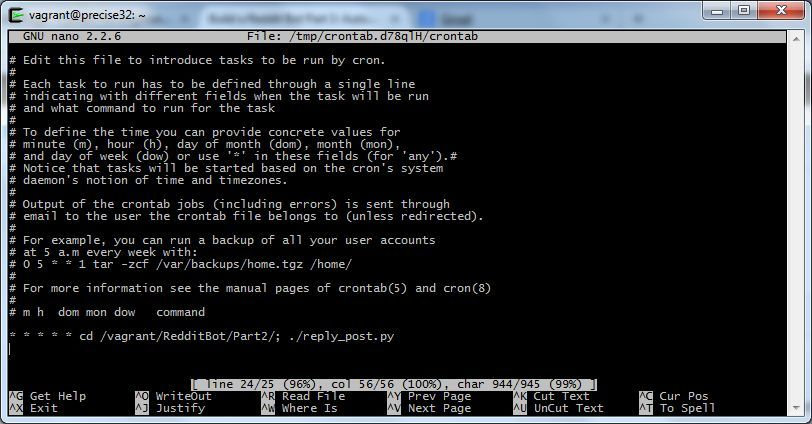
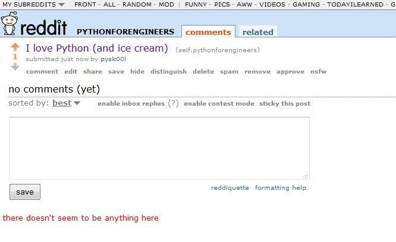

Build a Reddit Bot Part 3: Automate your bot

Part 1: Read posts from reddit
Part 4: Marvin the Depressed Bot
Up till now, we had to manually run our Python code every time we want to reply to Reddit posts. However, that is not the definition of a bot. A bot is a program that runs by itself.
So we will automate our bot, so it can run without our intervention.
As usual, you have both the video and text.
(Note: Vimeo changed the rules. If you want to watch the video in HD, you have to go to their website. Click on HD on the video below.)
Automating our bot
I will get a bit controversial here. I love my Windows. It’s the main OS I use at home.
However, practically speaking, if you work with servers, especially at companies that regularly use Python, you will be working with Linux. Not to say one is better than the other, it’s just that Microsoft has its own infrastructure (as does Mac).
So I will automate the bot in Linux. You could do it in Windows using Task Scheduler or something, but I want this series to be practical, so it can help you in the real world. So we will use Linux. Again, no judgement on if Linux is better than Windows or vice versa.
Linux/Python are closely tied together. In the last few years, Python has become the defacto tool for automating Linux.
If you don’t have Linux, don’t worry. I’ll be using a virtual machine. Specifically, Vagrant. Their getting started document is quite good, just follow it till you have a basic vagrant instance running. We’ll go from there.
Creating a Linux VM in Vagrant
I’m going to repeat some of the stuff you may have seen in the Vagrant tutorial, so we are all on the same page.
To start off, create a directory called _bot _anywhere you want and _cd _into it.
$ mkdir bot
Shantnu@Shantnu-PC /cygdrive/c/st/Vagrant
$ cd bot/
Run Vagrant init and vagrant up to create our VM.
$ vagrant init precise32
$ vagrant up
Bringing machine 'default' up with 'virtualbox' provider...
[default] Importing base box 'precise32'...
[default] Matching MAC address for NAT networking...
[default] Setting the name of the VM...
[default] Clearing any previously set forwarded ports...
[default] Clearing any previously set network interfaces...
[default] Preparing network interfaces based on configuration...
[default] Forwarding ports...
[default] -- 22 => 2222 (adapter 1)
[default] Booting VM...
[default] Waiting for machine to boot. This may take a few minutes...
DL is deprecated, please use Fiddle
[default] Machine booted and ready!
Once the machine is running, ssh into it:
$ vagrant ssh
Welcome to Ubuntu 12.04 LTS (GNU/Linux 3.2.0-23-generic-pae i686)
* Documentation: https://help.ubuntu.com/
New release '14.04.1 LTS' available.
Run 'do-release-upgrade' to upgrade to it.
Welcome to your Vagrant-built virtual machine.
Last login: Fri Sep 14 06:22:31 2012 from 10.0.2.2
In case you didn’t know, the /vagrant directory is the directory you created the vagrant file in. You can access it from your normal PC. Let’s change to that:
cd /vagrant/
Either run the commands below, or download the installer file from here. These commands will install pip, praw and Git, and then download the source code to our Reddit Bot that we wrote in Part 2.
sudo apt-get update -y
sudo apt-get install python-pip -y
sudo apt-get install git -y
sudo pip install praw
git clone https://github.com/shantnu/RedditBot.git
A brief detour on the crontab
Cron is the way tasks are usually scheduled in Linux. To get a good overview, see here.
In short, you enter 5 values: Minute (0-59), Hour(0-23), Day of Month(1-31), Month(1-12), Day of Week (0-6)
The first two are most important, as normally you’d want to run a job every day. For example, if you want to run a task everyday at 22:15 in the night, you would enter:
15 22 * * * Command
_\*_ means run it on every day, week etc.
That was the theory. Coming to practice, type:
$ crontab -e
no crontab for vagrant - using an empty one
Select an editor. To change later, run 'select-editor'.
1. /bin/ed
2. /bin/nano ---- easiest
3. /usr/bin/vim.tiny
TIP: I recommend you press 2 and choose nano. Like the help says, it’s the easiest to use. This is what you will get:

cygwin1
The commands are given at the bottom of the screen.
Scroll down, and enter the following command:
* * * * * cd /vagrant/RedditBot/Part2/; ./reply_post.py

cygwin2
Some explanation. We want our bot to run all the time, once a minute, which is why we have put * for everything.
The command may look scary:
cd /vagrant/RedditBot/Part2/; ./reply_post.py
The problem is cron jobs are run in their own environment. Which means you can’t assume which directories will be in the path. So I have to cd to the directory, and then run the script from there.
Linux allows you to chain commands together using the terminator ; That’s what we do in the example above.
Press Ctrl+o to save, then Ctrl+x to exit.
And your bot will be running in the background automatically. Give it a try. Post a message on the subreddit, and see your bot reply.

reddit3